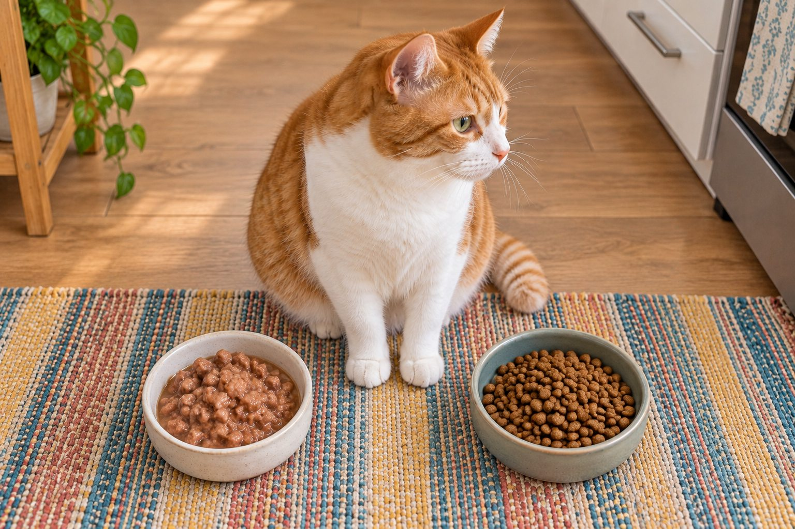

Both wet and dry foods can be appropriate if they are complete and balanced for your cat's life stage; moisture and routine are key differences.
The wet-versus-dry debate can sound absolute, but a cat's age, health, preferences, and your household routine matter. The first question is whether the chosen food is complete and appropriate for your cat, not which package looks more appealing.
Moisture and hydration
Wet food contains substantially more water than kibble. A cat eating mostly dry food may drink more from a bowl, while a cat eating wet food may drink less visibly. Fresh water should always be available either way.
A new, marked increase in drinking or urination is worth a veterinary call, even if the food has changed. Do not assume the diet explains every change.
Start with the label and the cat, not the texture. A food should be complete for the appropriate life stage, and the amount fed should fit the cat's body condition and health. Wet and dry formats differ in moisture, energy density, convenience, storage, and how easily portions are measured. Those differences are useful, but neither format automatically makes an unsuitable diet suitable. Ask your veterinarian about a cat with kidney, urinary, dental, or other medical concerns before changing a therapeutic food.
Look at what the cat reliably eats and how it behaves around meals. A diet that meets nutritional standards but is consistently refused is not a workable plan. A cat that overeats from a free-fed bowl may benefit from measured portions. The decision should include feeding behavior, household routine, and follow-up on weight rather than a slogan about one format.
Convenience and storage
Dry food is easy to measure and often convenient for food puzzles, but it should still be stored in a sealed container and served in appropriate portions. Wet food is usually served in meals and leftovers need refrigeration according to the label.
Wash bowls regularly, especially when serving moist food. Check expiration dates and discard spoiled food. An automatic feeder may suit some routines, though it does not remove the need to monitor appetite.
Wet food contributes water through meals, which can be helpful for overall moisture intake. Dry food contains much less water, so fresh drinking water remains essential. Do not assume that a cat eating wet food no longer needs a bowl, or that a fountain alone offsets a medical problem. Observe both drinking and litter habits. A sudden rise in thirst, large urine clumps, or straining calls for veterinary guidance regardless of the food format.
If a cat resists a change, make it gradual. Offer a small amount of the new food separately, maintain a familiar option, and watch intake. Do not force a cat to go without food until it accepts a preferred texture. Prolonged refusal can be dangerous, particularly for an overweight or ill cat. Ask the veterinarian for a transition plan if the cat skips meals.

Nutrition and portion size
Read the label for a statement that the product is complete and balanced for your cat's life stage. Calorie density varies, so equal-looking portions of wet and dry food are not necessarily equivalent. Ask your veterinarian to help adjust amounts if weight is changing.
Some medical conditions require a specific feeding plan. Follow your veterinarian's recommendation rather than changing foods based on a general article.
Storage rules differ. Unopened cans or pouches can be kept as directed on the package, but opened wet food needs prompt refrigeration and should not sit out indefinitely. Dry food should be stored in its original bag or container arrangement that preserves the label and lot information, then kept cool and dry. The FDA recommends retaining the original packaging details in case of a recall. Wash food bowls regularly, especially when wet food residue remains after a meal.
Convenience matters because a plan must work every day. Dry food may suit puzzle feeders and measured small portions, while wet food often requires more frequent serving and cleanup. In a multicat home, separate feeding stations can reveal who ate which portion. If one cat steals from another, the theoretical daily calorie calculation will not match reality.
Wet and dry food: practical comparison
| Factor | Wet food | Dry food |
|---|---|---|
| Moisture | Adds water through the meal. | Needs fresh drinking water alongside meals. |
| Serving | Refrigerate opened portions and clean the bowl. | Measure portions and store the original bag information. |
| Daily total | Count calories per can or pouch. | Count calories per measured serving; adjust if mixing formats. |
Choose a complete food appropriate for the individual cat and life stage.
A thoughtful transition
If you switch formats, change gradually over several days while watching appetite and stool. Some cats need more time to accept a new texture. Mixing wet and dry food can work when the total daily amount remains appropriate.
Compare calories and portions rather than bowl volume. A cup of one dry formula may deliver a very different amount of energy from another, and a pouch of wet food may be a full meal or only part of one. Read the feeding guide as a starting point, then adjust with the veterinarian based on body condition and weight trend. If combining formats, subtract the energy of one from the daily allowance before adding the other. Simply pouring a normal dry portion and adding wet food on top may create an unintended surplus.
Measure what is offered and what is actually eaten. A kitchen scale or consistent measuring method can improve accuracy, especially when several people feed the cat. Recheck body condition regularly. Weight can change gradually enough that a full bowl looks normal while the diet is no longer appropriate.
Practical details
Start with nutritional adequacy
A food's format does not tell you whether it is suitable. Look for a statement that the product is complete and balanced for your cat's life stage and ask your veterinarian about special medical needs. Ingredient lists alone can be misleading because they do not show the quality of the formulation or how nutrients compare after moisture is accounted for.
A kitten, healthy adult, senior, and cat with urinary disease may require different advice. A veterinarian can also help you set a calorie target using body condition, not just the range printed on a package. The right food is one your cat can eat safely and consistently while meeting its individual needs.
A practical wet-versus-dry comparison
| Situation | Practical response |
|---|---|
| Moisture | Wet food supplies more water through meals; dry-fed cats usually depend more on bowl drinking. |
| Storage | Open wet food needs prompt refrigeration; dry food needs a sealed container and a fresh-use window. |
| Portions | Calorie density differs, so do not swap equal-looking scoops without checking labels. |
| Acceptance | A gradual transition can help cats that strongly prefer one texture or feeding pattern. |
Moisture changes what you observe
Wet food contains much more water than kibble, so a cat eating canned food may drink less from the bowl without being poorly hydrated. A cat switching to dry food may drink more. Fresh water must remain available either way. A large, persistent change in drinking or urination still deserves veterinary advice, even when a diet change seems to offer an explanation.
Place clean water in quiet areas away from litter boxes. Some cats prefer a wide bowl or a fountain. If you mix wet and dry food, count both toward the day's calories. An equal weight of each food does not necessarily supply equal energy.
Dental health is more complicated than choosing dry kibble. Ordinary dry food is not a substitute for dental assessment and a veterinarian-recommended oral care plan. Some specially designed diets have particular dental claims, but do not assume any crunchy food cleans teeth. If the cat has mouth pain, it may avoid one texture or eat differently. Mention drooling, bad breath, dropping food, or a sudden preference change to the veterinarian.
For a cat with a medical condition, the prescribed diet and feeding directions take priority over general comparisons. Ask whether a wet, dry, or mixed version is available if the current texture is difficult. Do not switch a therapeutic food for a general product that seems similar on the front label. The clinical goal may depend on nutrients you cannot judge from appearance alone.
Storage and routine matter
Dry kibble can be convenient for measured puzzles and feeders, but it should be kept in its original bag within a sealed container or stored according to the label. Buy an amount you can use while it stays fresh. Once wet food is opened, refrigerate leftovers as directed and wash bowls after meals. Do not leave moist food out indefinitely.
Change foods gradually when possible. Some cats need time to accept a new smell or texture. Do not let a cat go without food while waiting for it to accept a preferred option; contact your veterinarian for a transition plan if refusal continues. Wet versus dry is a decision about the whole cat and household, not a contest with one universal winner.
Consider a cat that eats measured dry food and maintains a healthy weight with normal drinking. Another cat eats a wet diet because a veterinarian recommended a specific nutritional plan. Both can be well cared for. A third cat is offered full portions of wet and dry food each day and slowly gains weight; the issue is the combined total. The practical question is what this individual cat consumes over time and whether that supports good health.
Keep a short feeding record during a transition: product names, amounts, appetite, stool, and weight if available. Change gradually and review the result after the cat has had time to adapt. If the cat refuses food, vomits repeatedly, or seems unwell, contact a veterinarian. The best format is one that provides complete nutrition and can be fed consistently and safely.
When comparing labels, look for the statement that the product is complete and appropriate for the cat's life stage, then ask how the food is intended to be served. Some pouches are complementary toppers rather than complete meals. Check calories per can, pouch, or measured dry amount before combining formats. A feeding plan should add up to one daily total. If you cannot interpret the label, bring a photo to your veterinarian. The WSAVA nutrition toolkit encourages individual nutritional assessment rather than choosing a food by marketing language alone.
Recheck the decision after several weeks. Is the cat eating reliably, maintaining a suitable body condition, and using the litter box normally? Can the household store and serve the food safely? A theoretically ideal format that regularly sits out too long or is eaten by the wrong cat may not be the best practical choice. Make changes gradually and seek veterinary advice if appetite or health changes.
Compare complete diets, not just textures
Start by checking that the food is complete and appropriate for your cat's life stage. Then compare the practical fit: whether the cat eats it reliably, how you store it, whether it supports a healthy body condition, and how much water the cat consumes overall. Wet food adds moisture through meals; dry food is convenient for measured portions and some feeding toys. Either choice can fail if the total diet is unsuitable or the portions are too large.
If you combine wet and dry food, count both toward the daily intake. Do not fill a dry bowl as usual and add full wet meals on top without adjusting quantities. Introduce a change gradually and monitor stool, appetite, and weight. A cat with a medical condition may need a specific diet or feeding approach, so consult the veterinarian before changing a prescription food.
Preference matters, but it is only one part of the decision. Some cats accept a new food only after several gentle exposures; others need consistency. Keep fresh water available regardless of food texture. Track body condition over time rather than relying on a single day's appetite. If your cat refuses food entirely, seek veterinary advice promptly instead of waiting for the cat to give in.
Continue exploring
For a broader routine, read Can Dogs Eat Bananas? What Pet Owners Should Know, Can Cats Eat Cooked Chicken?, and How to Read a Pet Food Label Without the Hype.
Frequently Asked Questions
Is wet food better for hydration?
Its higher moisture content can add water to the diet, but fresh drinking water is still essential.
Is dry food bad for cats?
A complete dry diet can be appropriate for many cats; individual health needs may change the recommendation.
Can I feed both wet and dry food?
Yes, if portions are balanced and the foods suit your cat's needs.
Editorial references
These resources informed the general guidance in this article. They do not replace advice tailored to your pet.
This guide offers general information. Your pet’s age, health, and history may call for a different plan. For medical concerns, ask your veterinarian.